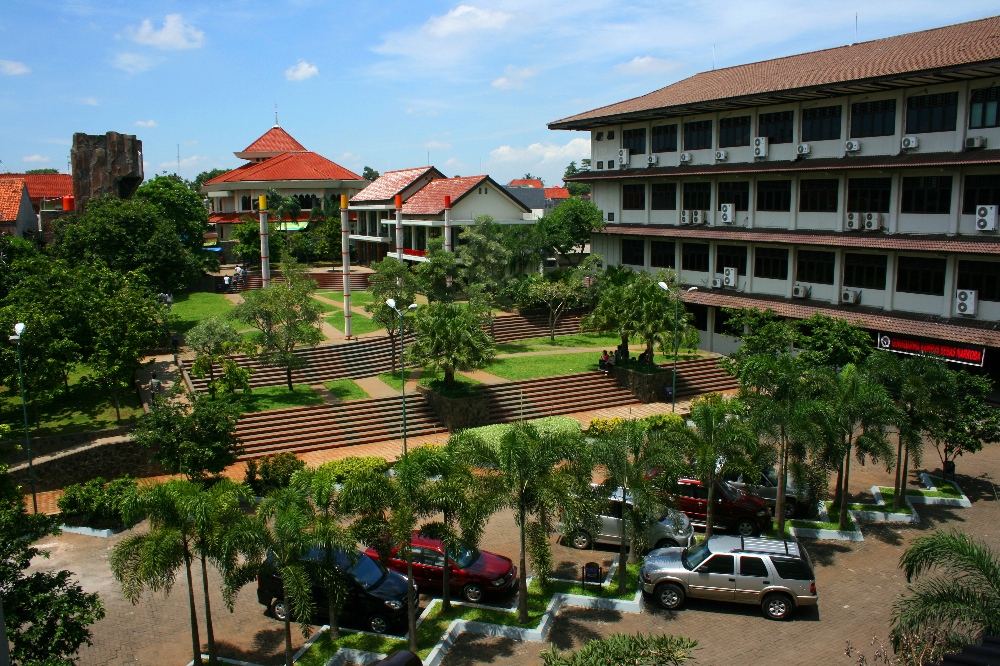
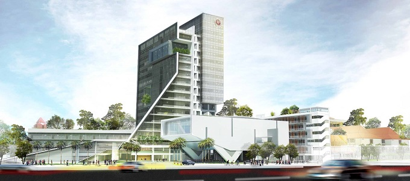
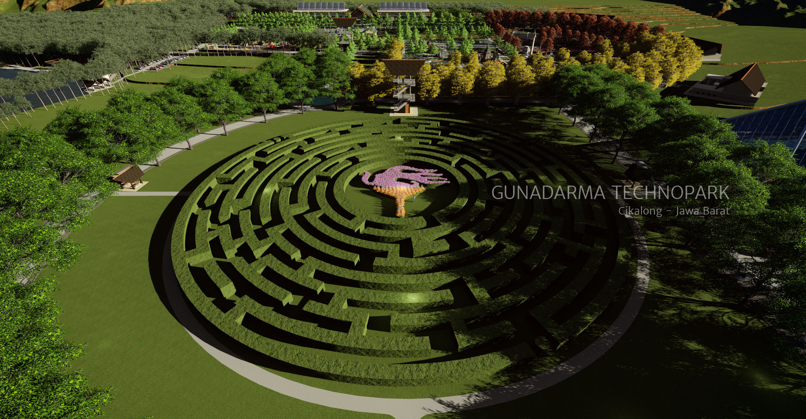

Sejarah Universitas Gunadarma

Pada 7 Agustus 1981 berdiri Program Pendidikan Ilmu Komputer (PPIK)
di Jakarta yang tiga tahun kemudian berubah menjadi Sekolah Tinggi Manajemen
Informatika dan Komputer (STMIK) Gunadarma. Enam tahun kemudian, tepatnya pada
13 Januari 1990, berdiri Sekolah Tinggi Ilmu Ekonomi Gunadarma (STIE Gunadarma).
Pada tahun 1993, STMIK dan STIE membuka Program Magister dengan konsentrasi Manajemen
Sistem Informasi untuk STMIK serta Magister Manajemen untuk STIE. Selanjutnya, melalui S.K.
Dirjen DIKTI No.92/Kep/Dikti/1996 tertanggal 3 April 1996, STMIK dan STIE Gunadarma melebur menjadi
UNIVERSITAS GUNADARMA bersama dengan empat fakultas baru yaitu Fakultas Teknologi Industri, Fakultas
Teknik Sipil dan Perencanaan, Fakultas Psikologi, dan Fakultas Sastra. Membuka milenium baru, Universitas
Gunadarma membuka Program Doktor Ilmu Ekonomi berdasarkan ijin Dirjen Dikti Departemen Pendidikan Republik Indonesia No. 55/DIKTI/2000 yang diikuti dengan pembukaan Program Doktor Teknologi Informasi berdasarkan ijin Dirjen Dikti Departemen Pendidikan Republik Indonesia No. 3716/P/T/2002.
Lokasi Universitas Gunadarma

Kampus A
Jl. Kenari nomor 13 Jakarta Pusat, 10430 Phone : 330220, 330226
Kampus B
Jl. Salemba Bluntas Jakarta Pusat
Kampus C
Jl. Salemba Raya nomor 53 Jakarta Pusat Phone : 3906518, 3908568 Fax : 3100325
Kampus D
Jl. Margonda Raya Pondok Cina, Depok Phone : 7863819, 7520981,7863788
Kampus E
Jl. Akses Kelapa Dua Kelapa Dua, Cimanggis Phone : 8719525, 8710561, 8727541 ext. 103,106 Fax : 8710561
Kampus G
Jl. Akses Kelapa Dua Kelapa Dua, Cimanggis Phone : 8719525, 8710561, 8727541 ext. 103,106 Fax : 8710561
Kampus H
Jl. Akses Kelapa Dua Kelapa Dua, Cimanggis Phone : 8719525, 8710561, 8727541 ext. 103,106 Fax : 8710561
Kampus J
Jl. KH. Noer Ali, Kalimalang Bekasi, Phone : 88860117
Visi & Misi

Visi
Pada tahun 2022 menjadi Universitas Gunadarma menjadi perguruan tinggi swasta bereputasi internasional berbasis keunggulan dalam kegiatan tridharma perguruan tinggi yang holistik dan integratif dalam rangka meningkatkan daya saing bangsa.
Misi
Menyelenggarakan pendidikan tinggi berbasis teknologi informasi dan komunikasi dalam rangka menghasilkan SDM yang kompetitif dan berkarakter.
Menyelenggarakan kegiatan penelitian bertaraf nasional dan international yang mendorong pengembangan keilmuan dan perekonomian nasional.
Menyelenggarakan kegiatan pengabdian kepada masyarakat sebagai pengejawantahan tanggung jawab sosial universitas dalam rangka meningkatkan kesejahteraan masyarakat.
Menyelenggarakan kerjasama dengan pelbagai lembaga, baik di dalam maupun di luar negeri, dengan mengutamakan kepentingan nasional dan memperkuat jati diri bangsa.
Menerapkan tata kelola universitas yang baik dalam rangka meningkatkan daya adaptasi universitas terhadap dinamika lingkungan global.
Berita StudentSite